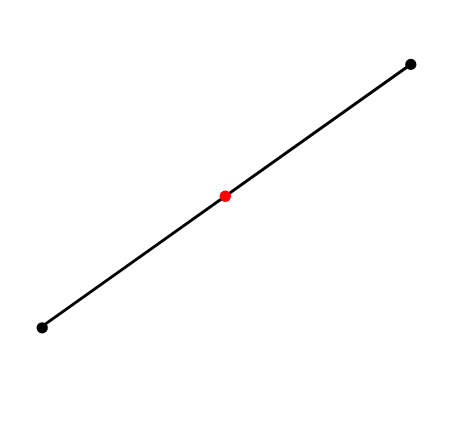
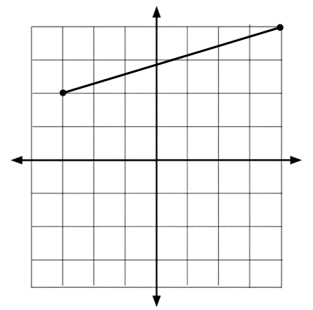
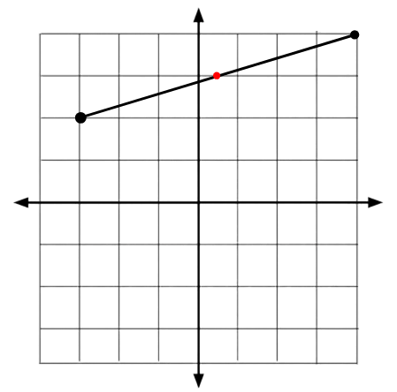

Midpoints
Introduction
A midpoint in a line segment is the halfway point in it…

The formula for finding midpoints is…
An example of finding a midpoint would be two points on a coordinate graph...

We can see that one point is at (-3, 2) and another point at, (4, 4). We first add up the x values to get the midpoint’s x value…
So in this example, the midpoint is at, (0.5, 3)...

If the math problem is giving you the coordinates for the two points of the line segment like these ones…
What’s the midpoint of (2, 4) and (8, 2)?
What’s the midpoint of (7, 6) and (-8, -4)?
What’s the midpoint of (-2, -4) and (-8, 6)?
First we add up the two point’s x values…
What’s the midpoint of (2, 4) and (8, 2)?
What’s the midpoint of (7, 6) and (-8, -4)
What’s the midpoint of (-2, -4) and (-8, 6)
Then we add up the two point’s y values…
What’s the midpoint of (2, 4) and (8, 2)
What’s the midpoint of (7, 6) and (-8, -4)
What’s the midpoint of (-2, -4) and (-8, 6)
The answers to the first problem is, (5, 3), the second problem is (-0.5, 1), the third and final problem is, (-5, 1).